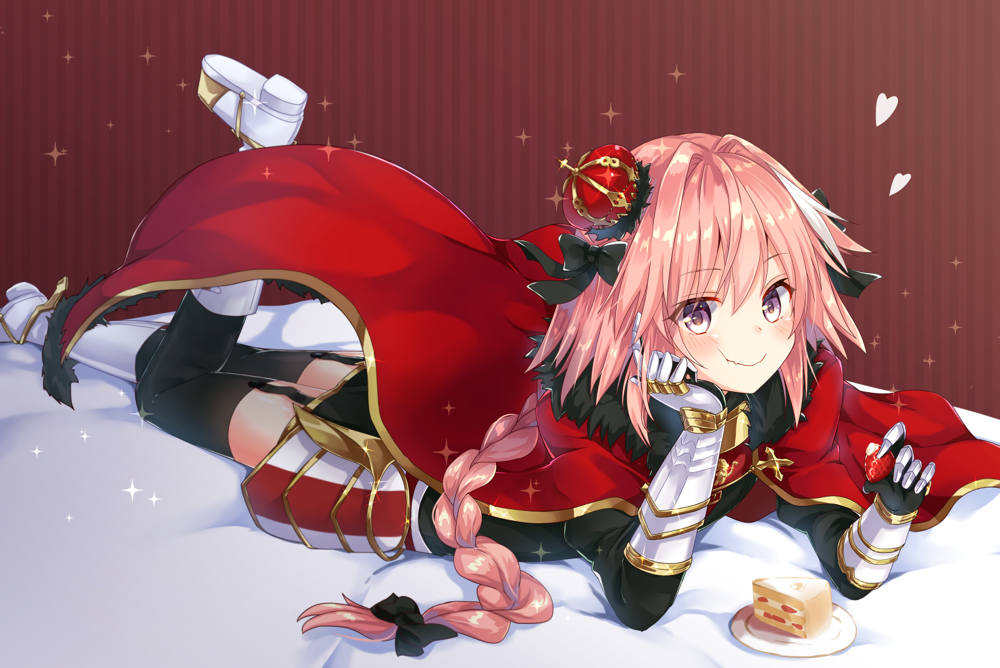

After years of ironic memes, countless fan debates, and many bold declarations, fans have finally reached the conclusion that admiring the charm of everyone's favorite "trap" character, Astolfo, doesn’t actually define one's orientation. This is an appreciation for the art and character - nothing more, nothing less!
